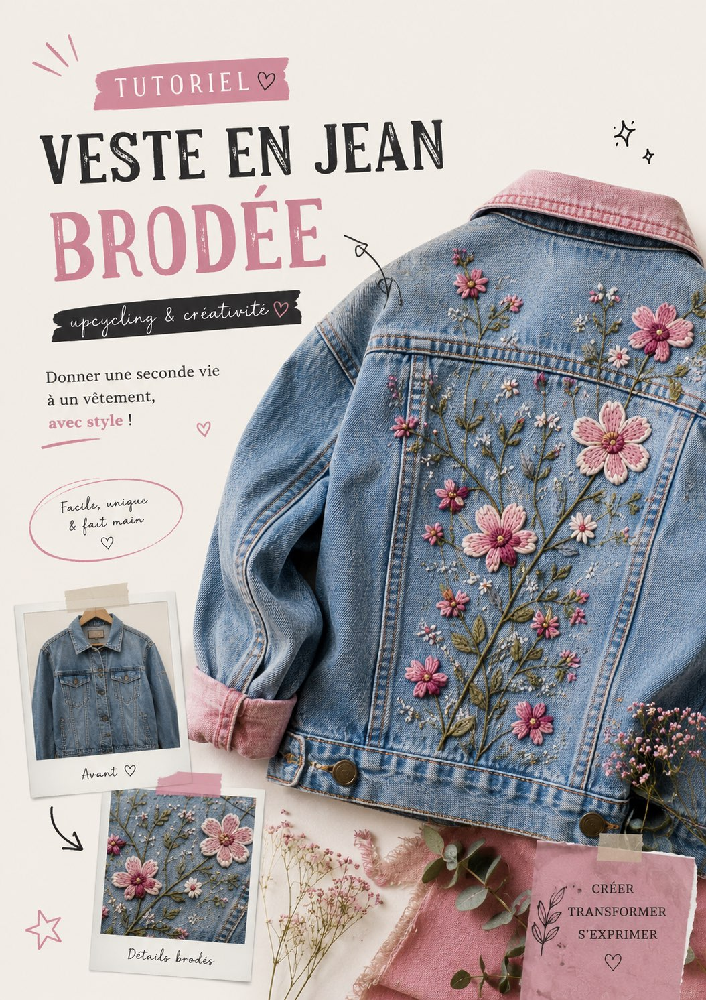
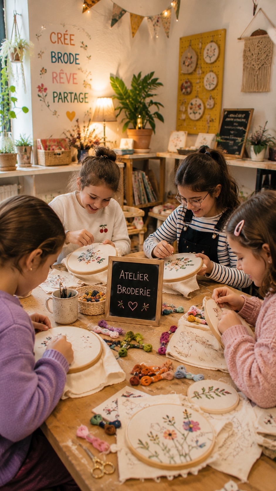
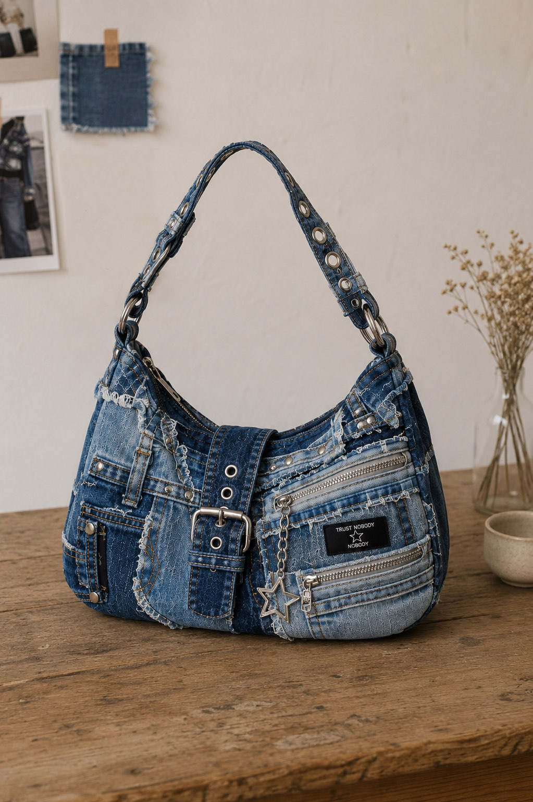
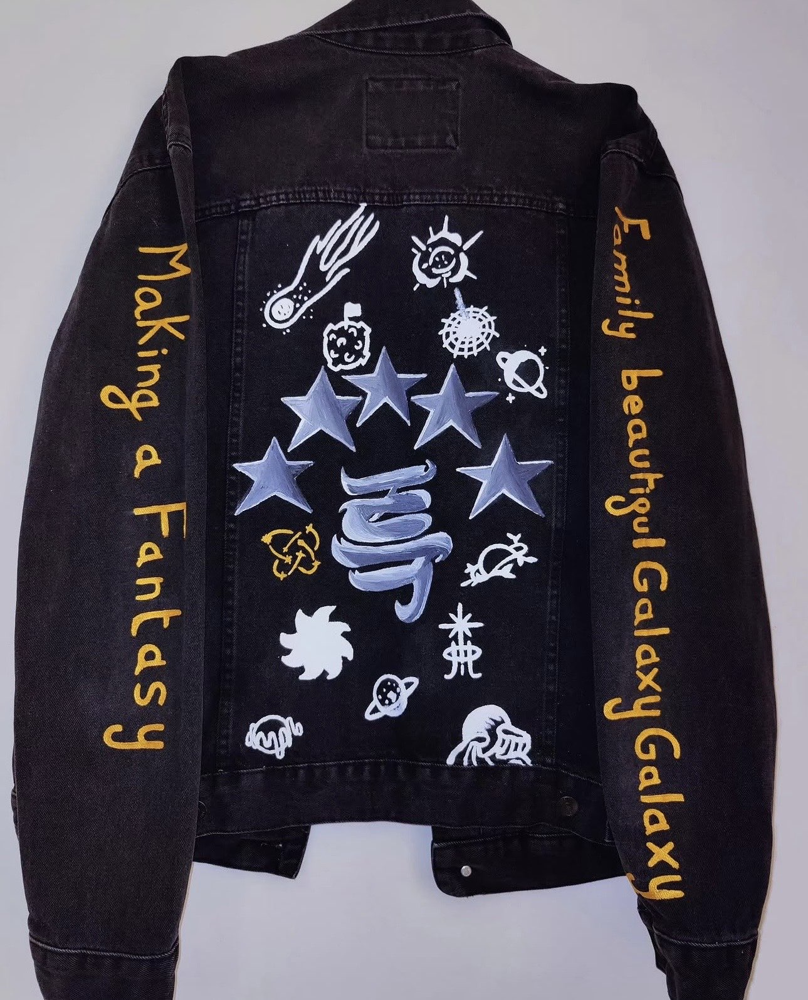

La mode se réinvente.
Transforme, crée, partage. Rejoins une communauté passionnée par l'upcycling textile et donne une seconde vie à tes vêtements.
2.4k+
Créations partagées
180+
Tutoriels
12k
Membres actifs




Ils nous font confiance
Découvre les retours de notre communauté.
"J'ai participé à l'atelier tie-dye et c'était incroyable ! L'ambiance, les conseils, tout était parfait. J'ai hâte de revenir."
"J'ai acheté une veste brodée sur la boutique, la qualité est dingue. On sent que c'est fait avec amour. Pièce unique, je suis fan."
"Les tutos sont super bien expliqués, j'ai réussi à transformer mon vieux jean en sac. Même ma mère était impressionnée !"
"La communauté est vraiment bienveillante et inspirante. J'ai posté ma première création et les retours étaient hyper encourageants."
"L'atelier broderie en ligne était top. Tu te connectes et c'est parti. Parfait quand on peut pas se déplacer."
"J'offre systématiquement des pièces UpArt pour les anniversaires. C'est original, éco-responsable et toujours apprécié."
Commentaires